The public platform is functionally complete for its core job: marketing pages explain the model, registration wizard converts on register.olasentra.com, and staff PWA exists. The premium homepage (~70% of UX Master Plan vision) is credible and data-driven. The largest gaps are visual/theme inconsistency (dark premium home vs light inner pages), SEO canonical misconfiguration (marketing pages canonicalize to register subdomain), missing About page, and brand/name drift (production site name “Security Update” vs Olasentra positioning in docs).
| Page | File | Production URL | HTTP | Theme | H1 | OG meta | Canonical |
|---|---|---|---|---|---|---|---|
| Homepage | home.php | olasentra.com/home.php | 200 | Premium dark | 1 | Yes | register.olasentra.com ⚠ |
| Roles | roles.php | olasentra.com/roles.php | 200 | Light | 1 | Yes | register.olasentra.com ⚠ |
| Events | events-page.php | olasentra.com/events-page.php | 200 | Light | 1 | Yes | register.olasentra.com ⚠ |
| How it works | how-it-works.php | olasentra.com/how-it-works.php | 200 | Light | 1 | Yes | register.olasentra.com ⚠ |
| FAQ | faq.php | olasentra.com/faq.php | 200 | Light | 1 | Yes | register.olasentra.com ⚠ |
| Contact | contact.php | olasentra.com/contact.php | 200 | Light | 1 | Yes | register.olasentra.com ⚠ |
| Privacy | privacy.php | olasentra.com/privacy.php | 200 | Legacy card | 1 | No | Missing |
| About | — | — | N/A | — | — | — | — |
| Page | File | Production URL | HTTP | Notes |
|---|---|---|---|---|
| Registration wizard | index.php | register.olasentra.com/ | 200 | 8-step wizard ON (feature_registration_wizard_v2); Phase A verified |
| Form submit | submit.php | POST only | — | Handler, not a screen |
| Staff hub / PWA | staff-app.php | register.olasentra.com/staff-app.php | 200 | PWA entry; weak page title (“Security Update” only) |
| Staff portal | staff-portal.php | /staff-portal.php | — | Returning staff sign-in |
| Status lookup | status.php | /status.php | — | Application status |
| Check-in | check-in.php | /check-in.php?token=… | — | Event day; email-linked |
| Staff profile | staff-profile.php | /staff-profile.php | — | Profile completion gate |
| Messages / notifications | staff-messages.php, staff-notifications.php | — | — | Staff comms |
| PWA manifest | manifest.php | /manifest.php | — | Installable app metadata |
| Offline fallback | offline.php | /offline.php | — | Service worker fallback |
| Surface | Entry | Public relationship |
|---|---|---|
| Manager login | /login.php → admin/login.php | Footer “Admin” link on marketing site; olasentra.com/admin/* 302s here |
| Website CMS | admin/website-*.php | Edits all marketing copy (home, roles, events, how, FAQ, contact, global) |
| Feature flags | admin/feature-flags.php | feature_public_premium_v2, feature_registration_wizard_v2 |
| Settings / branding | admin/settings-site.php | Site name, domain URLs, logo — drives all four hosts |
| Surface | Path | Public relationship |
|---|---|---|
| Apply ERP login | /admin/admin/login.php | Payroll/PSA ops; SSO from main admin |
| Legacy apply form | /admin/index.php | Separate staff_master flow — not primary registration path |
| Profile update | /admin/update-details.php | Staff self-service on apply DB |
| Robots | — | noindex, nofollow in apply secure layout — correct for ERP |
| Asset / file | Role |
|---|---|
.htaccess | Host-based routing: marketing on olasentra.com, registration on register, admin ERP on admin |
includes/public/layout-top.php | Marketing shell; premium CSS gated to pageSlug === 'home' |
includes/share-meta.php | OG/Twitter/canonical — uses getRegistrationSiteUrl() for canonical (SEO issue on marketing) |
includes/website-content.php | CMS defaults, nav items, footer columns |
assets/css/website.css (21 KB) | Inner marketing pages |
assets/css/home-premium.css (19 KB) | Homepage only |
assets/css/registration-wizard.css (19 KB) | Wizard on register subdomain |
robots.txt / sitemap.xml | Not in repo |
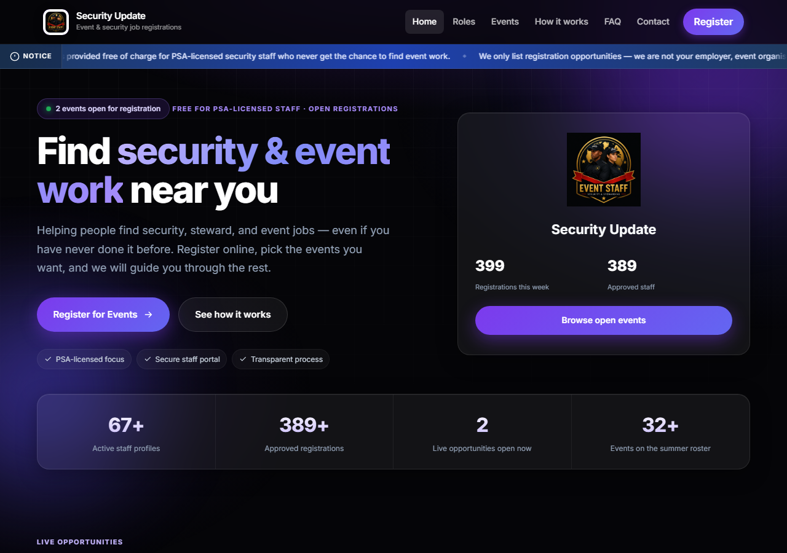
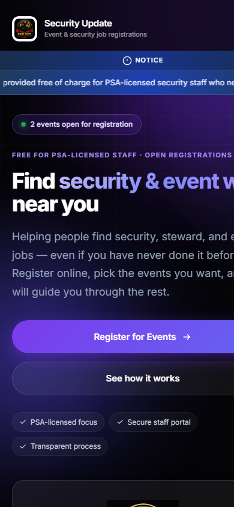
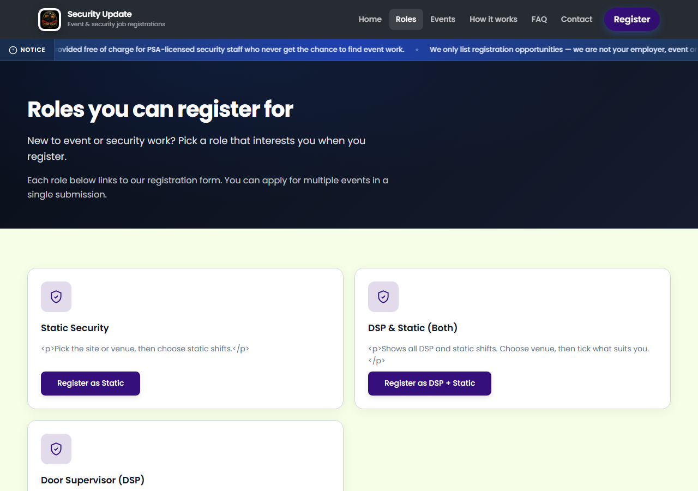
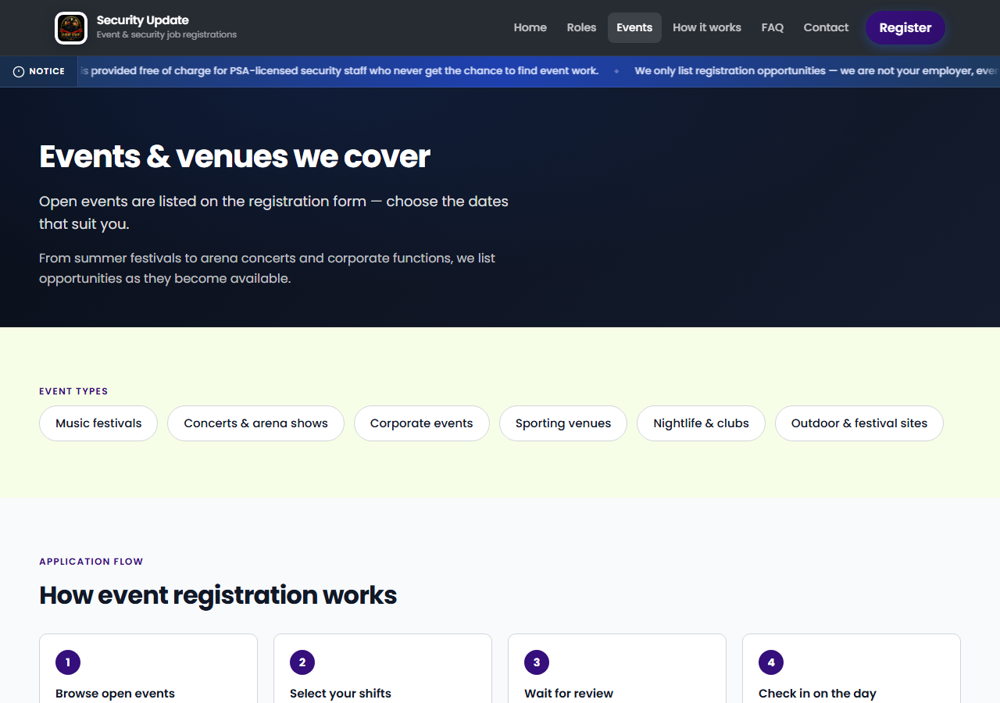
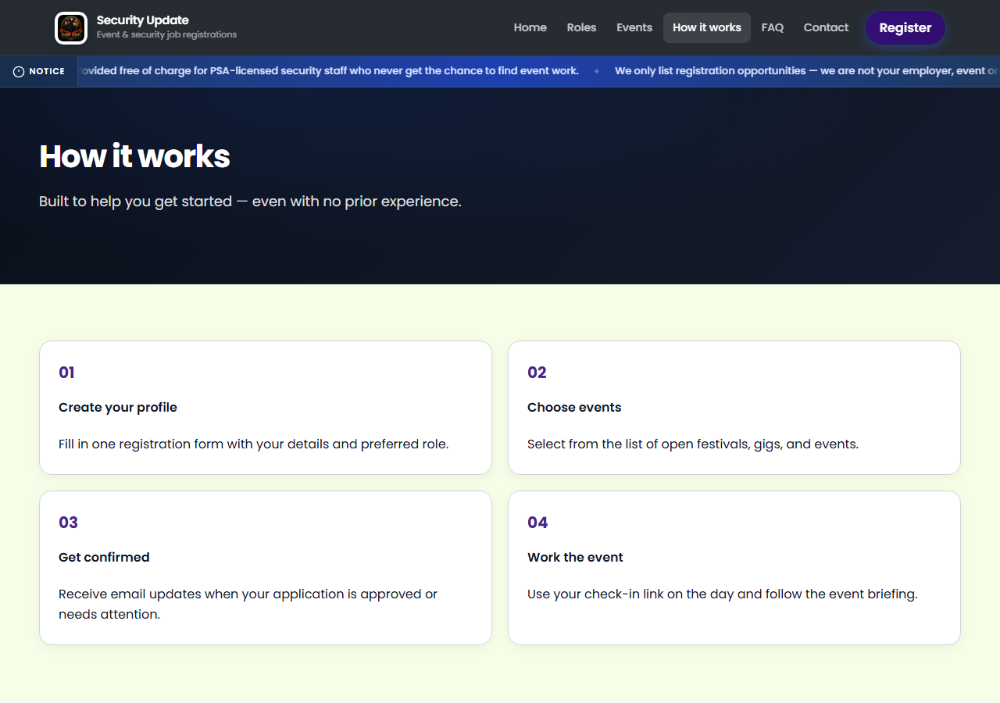
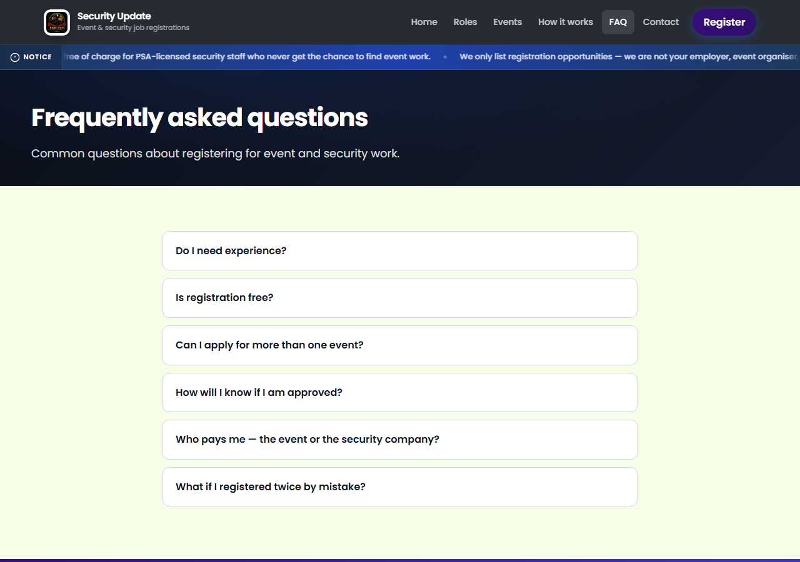
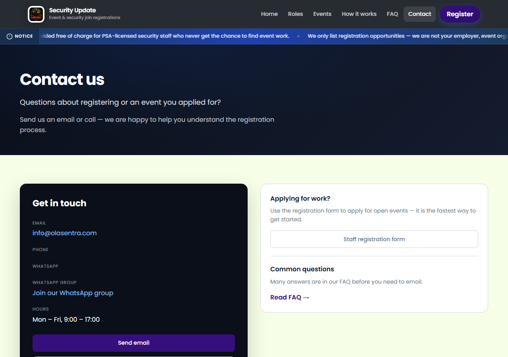
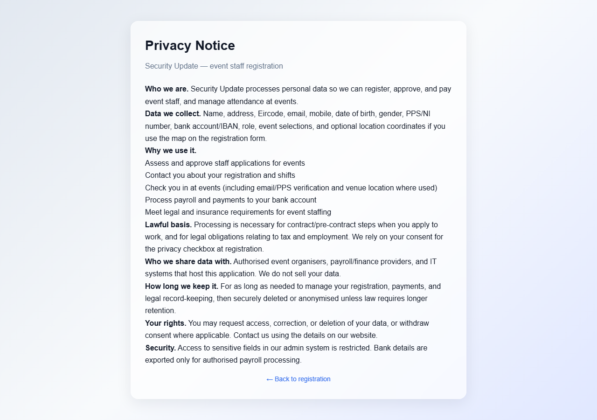
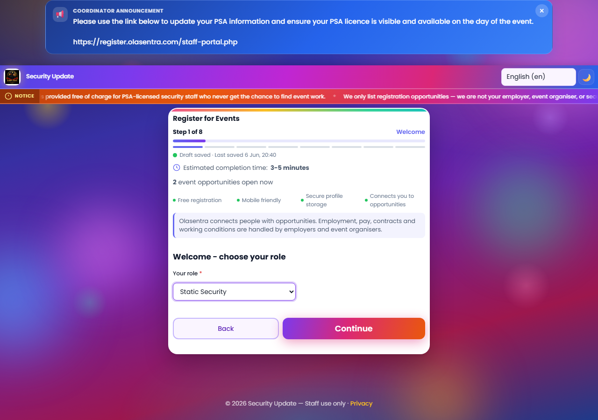
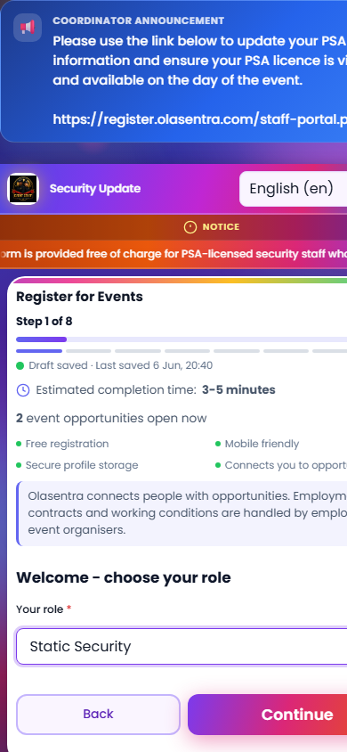
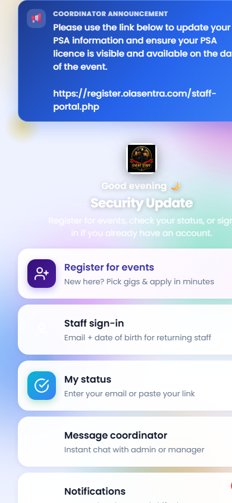
olasentra.com → Marketing canonical (home, roles, events, how, FAQ, contact, privacy)
/index.php → 302 register.olasentra.com
/admin/* → 302 admin.olasentra.com
register.olasentra.com → Registration wizard + staff PWA (index.php default)
Marketing paths → 302 olasentra.com
admin.olasentra.com → ERP for ops managers (login, roster, events, website CMS)
Same public_html; paths rewritten to /admin/
apply.olasentra.com → Payroll/PSA satellite (separate deploy: apply/admin/)
SSO bridge from main admin; noindex
| Relationship | Current state | Risk |
|---|---|---|
| olasentra.com → register | All Register CTAs point to getRegistrationFormUrl() → register subdomain | Correct conversion path |
| olasentra.com → admin | Footer Admin link; subdomain redirect | Public footer exposes admin entry (acceptable for ops platform) |
| register → olasentra.com | .htaccess 302 for marketing PHP on register host | Prevents duplicate content on wrong host |
| Canonical URLs | Marketing pages emit register.olasentra.com/… canonical | SEO split — search engines may index wrong host |
| OG image host | share-meta.php uses registration URL base | Social previews may show register host for marketing shares |
| apply.olasentra.com | Isolated; staff PSA/payroll; not linked from main nav | Correct separation; coordinator announcements link staff-portal on register |
| Brand name | Production CMS name: “Security Update” | Docs/UX plan say “Olasentra” — trust and SEO confusion |
feature_public_premium_v2); hero, live events grid, animated stats, trust chips, testimonials, staff portal band, final CTA.events-page.php is CMS educational content (event types, 4-step flow) — not a live events directory.about.php; UX Master Plan and Implementation Master Plan list it as planned.how-it-works.php partially covers company story via getCompanyTrustPoints().<details> accordion — accessible pattern, no JS required.register.olasentra.com wizard (verified in HTML probe: 13–28 register mentions per page).index.php?form={slug} for role-locked forms.mobile.css (13 KB) + responsive header hamburger (website.js).getWebsiteNavItems()).aria-expanded.<title> and meta description via renderShareMeta() — present on marketing + register.og-image.php or branding logo — good for social.register.olasentra.com for pages served on olasentra.com.robots.txt or sitemap.DirectoryIndex home.php — root may serve home without redirect canonicalization to /home.php.lang="en" on html; nav aria-label; menu button aria-label; notice role="region".aria-hidden on home.home-premium.js for counter animation — non-blocking at end of body.login-page card — breaks brand continuity.| Score | Value | Key factors |
|---|---|---|
| UX | 68 | Strong home + wizard; theme fracture, missing About, events page disconnect |
| Mobile | 72 | Wizard excellent; marketing responsive; no PWA promo on home |
| Trust | 74 | Compliance notice + FAQ pay clarity; brand name + privacy layout hurt |
| Conversion | 62 | Many CTAs but hero aside, canonical SEO risk, no urgency badges, theme drop |
| Accessibility | 71 | Good nav/FAQ/wizard patterns; no skip link, contrast unverified, privacy gap |
| Performance | 70 | Lean CSS; font request on home; JS animation optional |
| Visual design | 65 | Home ~78 alone; inner pages ~55; platform average pulled down by inconsistency |
| ID | Severity | Finding | Evidence |
|---|---|---|---|
| B-P1 | High | Marketing canonical URLs point to register subdomain | share-meta.php + production probe: all olasentra.com pages → register.olasentra.com/… |
| B-P2 | High | Inner pages not premium-themed | layout-top.php premium gate home-only; screenshots faq/roles vs home |
| B-P3 | High | About page missing | No about.php; UX Master Plan planned |
| B-P4 | Medium | Production brand name “Security Update” | All page titles in probe; settings-site.php controls name |
| B-P5 | Medium | Privacy page off-brand, weak SEO | Standalone layout; no OG/canonical; payroll wording |
| B-P6 | Medium | Events page not live-data driven | events-page.php CMS only; home has live grid |
| B-P7 | Medium | Hero aside logo card wastes fold | home-desktop.png; B-H1 from homepage audit |
| B-P8 | Medium | No JSON-LD / sitemap / robots.txt | Repo search; probe jsonld: false |
| B-P9 | Medium | Steward wording vs PSA-only notice | Hero lead production copy vs site notice |
| B-P10 | Low | Testimonials hardcoded | getHomepageTestimonials() |
| B-P11 | Low | No PWA promotion on homepage | staff-app exists; home has staff portal band only |
| B-P12 | Low | Header nav not premium-styled on home | Screenshot: light header on dark hero |
getMarketingSiteUrl() on marketing pages; keep register URL only on register host.privacy.php; wrap in marketing shell or match footer link style.robots.txt allowing marketing + register; disallow /admin/, /cron/, apply host.feature_public_premium_v2 scope expansion.about.php CMS page — mission, operator model, link from nav/footer.getHomepageLiveData() or link to home anchor.admin/website-home.php or new section).| Wave | Scope | Addresses |
|---|---|---|
| B1 — SEO & canonical fix | share-meta host logic, robots.txt, sitemap, privacy meta | B-P1, B-P5, B-P8, B-QW1, B-QW4, B-QW6 |
| B2 — Brand & copy | Site name, hero copy, privacy wording, employer consistency | B-P4, B-P9, B-QW2, B-QW3, B-M10 |
| B3 — Premium shell expansion | Inner pages + nav + footer parity | B-P2, B-P12, B-M1, B-M8 |
| B4 — Conversion polish | Hero aside, urgency badges, resume link, PWA band | B-P7, B-P11, B-M2, B-M3, B-M9, B-QW5 |
| B5 — Content & trust | About page, CMS testimonials, events live strip | B-P3, B-P6, B-P10, B-M4, B-M5, B-M6 |
| Artifact | Path |
|---|---|
| This report | docs/PHASE-B-PUBLIC-PLATFORM-AUDIT.html |
| Production probe JSON | storage/reports/phase-b-public-platform-snapshot.json |
| Homepage probe JSON | storage/reports/phase-b-homepage-audit-snapshot.json |
| Screenshots (18) | docs/screenshots/phase-b/*.png |
| Screenshot script | scripts/capture-phase-b-public-screenshots.ps1 |
| Prior homepage audit | docs/PHASE-B-HOMEPAGE-AUDIT.html |
| UX Master Plan | docs/UX-MASTER-PLAN.html |